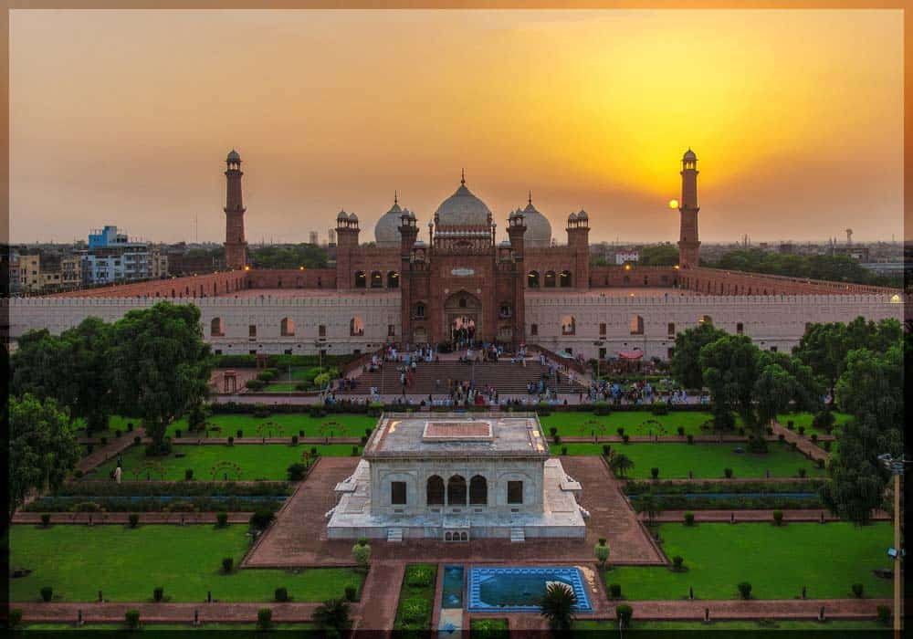

As of my last knowledge update in September 2021, Pakistan is not a province; it is a sovereign
country located in South Asia. Within Pakistan, Punjab is one of the four provinces and is the
most populous one. As of 2021, the population of Punjab, Pakistan, was estimated to be around
110 million. However, please note that population figures can change over time due to various
factors, and I recommend checking the latest official sources for the most up-to-date
information on population statistics.

Minar-e-Pakistan is a significant historical monument located in Lahore, Pakistan.
It holds great importance in the country's history and is a symbol of the struggle for independence.
Minar-e-Pakistan was constructed to commemorate the Lahore Resolution, which was passed on March 23, 1940,
during the All-India Muslim League's annual session held at Minto Park (now Iqbal Park) in Lahore. This
resolution demanded a separate nation for Muslims of the Indian subcontinent, eventually leading to the
creation of Pakistan in 1947.
The monument stands at a height of around 70 meters (230 feet) and is a blend of Islamic and modern architecture.
It features a base with a circular platform and a central stone pillar that tapers upwards. At the top of the
pillar,
there is a balcony where the Lahore Resolution was passed. The monument is adorned with calligraphy and decorative
patterns, reflecting the artistic and cultural heritage of Pakistan.
Minar-e-Pakistan is not only a historical site but also a popular tourist destination and a place of patriotism
for
Pakistanis.
It serves as a reminder of the struggles and sacrifices made by the leaders and people of Pakistan to achieve
independence and
sovereignty. The site often hosts various events, gatherings, and celebrations, particularly on Pakistan's
Independence Day,
which is observed on August 14th every year.